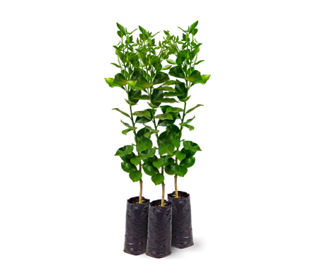
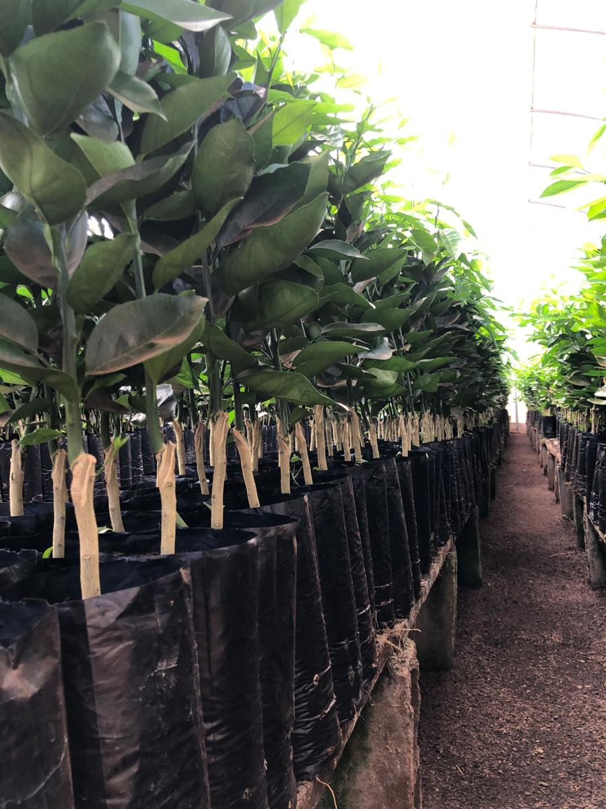
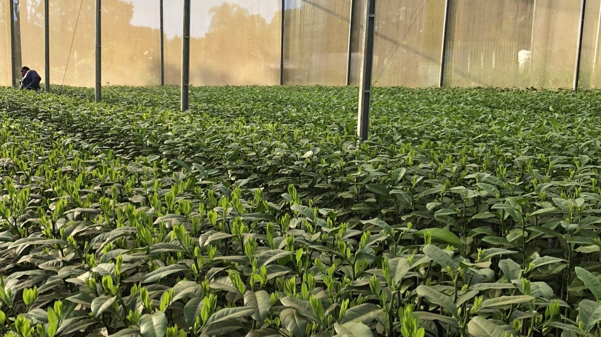

01
Laranja Pera
Uma das principais opções para formação e renovação de pomares comerciais.
Consultar disponibilidadeViveiro de mudas cítricas em Goianira/GO
Qualidade, experiência e variedade para produtores que planejam novos pomares ou a renovação de áreas produtivas. Mudas cítricas certificadas, atendimento para compras em quantidade e consulta de disponibilidade diretamente pelo WhatsApp.

Porta-enxertos formados
pelo próprio viveiro
Nota fiscal e documentação
de trânsito vegetal
Mudas certificadas,
conforme o viveiro informa
Atendimento comercial
para todo o Brasil
Principais variedades
Atendemos produtores que buscam mudas cítricas para projetos de cultivo comercial, com destaque para as variedades mais solicitadas em grandes quantidades.

Uma das principais opções para formação e renovação de pomares comerciais.
Consultar disponibilidadePara produtores que planejam ampliar áreas de cultivo.
Consultar disponibilidadeTambém trabalhamos com outras variedades de laranjas, tangerinas e limões, conforme disponibilidade.
Consultar variedades
Experiência e produção
A trajetória do Viveiro 2 Irmãos é construída a partir da experiência prática de seus proprietários na produção de mudas cítricas. O viveiro mantém o foco na qualidade, na padronização e na procedência das mudas comercializadas.
Os porta-enxertos são formados pelo próprio viveiro, em ambiente protegido.
Produção em telas elevadas e bancadas de cimento.
As mudas comercializadas possuem certificação, conforme informado pelo viveiro.
Para produtores e revendedores
O Viveiro 2 Irmãos atende quem precisa adquirir mudas cítricas para formar novos pomares, renovar áreas de cultivo ou abastecer operações de revenda.
Cada consulta começa pela variedade desejada, quantidade necessária e disponibilidade para atendimento.
Consultar condiçõesProcedência e documentação
A comercialização de mudas cítricas exige atenção à procedência e às condições de transporte. O Viveiro 2 Irmãos acompanha as vendas com nota fiscal e a documentação de trânsito vegetal aplicável à operação, incluindo autorização ou permissão para transporte estadual ou interestadual, conforme as exigências pertinentes.
As vendas são acompanhadas da nota fiscal correspondente à operação.
Documentação de trânsito vegetal aplicável ao transporte estadual ou interestadual.
As mudas comercializadas possuem certificação, conforme informado pelo viveiro.
Antes da retirada, consulte nossa equipe sobre os documentos necessários para o transporte da sua compra.
Consulta e retirada
Para consultar a disponibilidade, informe os detalhes do pedido e organize a retirada diretamente no viveiro, em Goianira/GO.
Diga quais variedades você procura e a quantidade desejada para o seu projeto.
Verificamos a disponibilidade e informamos as condições comerciais pelo WhatsApp.
Combine a data de retirada no viveiro e confirme o prazo acordado.
Fale com o Viveiro 2 Irmãos
Consulte a disponibilidade de mudas cítricas para formar ou renovar seu pomar. Informe a variedade, a quantidade desejada e quando pretende realizar a retirada.
Solicitar cotação